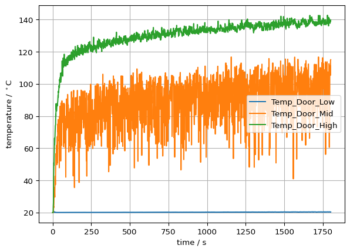
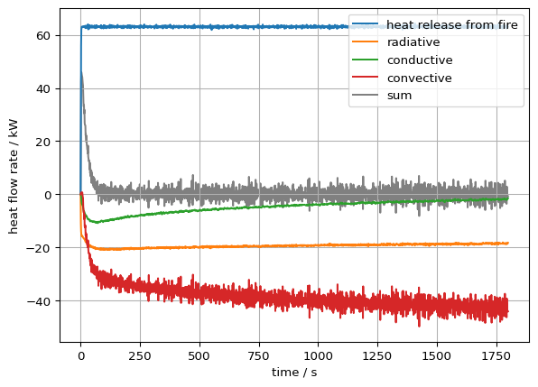
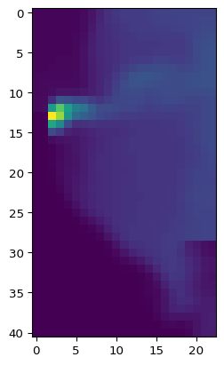
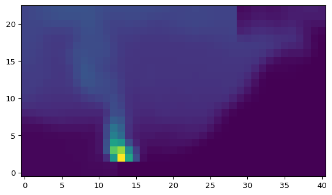
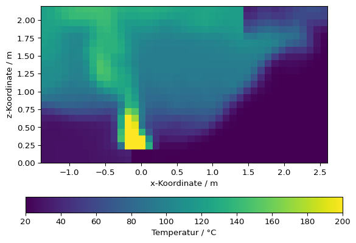

import fdsreader3 Fdsreader
Um Simulationsdaten, die mit FDS berechnet wurden, mit Python auszuwerten, hat die Arbeitsgruppe von Prof. Lukas Arnold das Python-Modul fdsreader entwickelt. Ziel ist es, die meisten von FDS erzeugten Ausgabeformate auszulesen und in Python-Datenstrukturen abzubilden.
Das Modul ist frei verfügbar und Open Source. Der Quellcode ist auf GitHub gehostet: FireDynamics/fdsreader, eine API-Dokumentation ist ebenfalls verfügbar.
3.1 Installation und Import des Pakets
Das fdsreader-Modul kann über pip installiert werden (siehe auch das GitHub-Repository):
pip install fdsreaderZur Einführung in die grundlegende Verwendung von fdsreader betrachten wir ein einfaches FDS-Szenario. Zunächst importieren wir das Modul:
Da wir die Daten auch visualisieren möchten, importieren wir zusätzlich matplotlib:
import matplotlib.pyplot as plt3.2 Auswahl des richtigen Ordners
Als Nächstes muss der Reader auf das Verzeichnis zeigen, das die Simulationsdaten enthält, insbesondere die Smokeview-Datei:
# Pfad zu den Daten definieren
path_to_data = '../skript/01-data/first_example'
sim = fdsreader.Simulation(path_to_data)/opt/hostedtoolcache/Python/3.12.12/x64/lib/python3.12/site-packages/numpy/lib/_npyio_impl.py:1048: UserWarning: no explicit representation of timezones available for np.datetime64
arr = _load_from_filelike(Das Simulation-Objekt sim enthält nun alle Informationen und Daten des Simulationsausgangs:
simSimulation(chid=StecklerExample,
meshes=1,
obstructions=7,
slices=5,
data_3d=5,
smoke_3d=3,
devices=4)Die Variable sim enthält Informationen über das Gitter (MESH), vier Schnittdaten (SLCF) und vier Punktmessungen (DEVC). Das zusätzliche Messgerät – in der FDS-Eingabedatei wurden nur drei definiert – ist die Zeitspalte.
3.3 Messgeräte-Daten
Messgeräte in FDS
Messgeräte fungieren als virtuelle Sensoren, mit denen Daten wie Temperatur, Wärmestrom, Gaskonzentration, Geschwindigkeit usw. an bestimmten Punkten im Simulationsbereich aufgezeichnet werden können. Diese Daten sind entscheidend für das Verständnis des Verhaltens von Feuer und Rauch unter verschiedenen Bedingungen.
Ein Messgerät kann mit einem Label (ID) versehen werden, was die Identifizierung in der durch FDS erzeugten CSV-Datei vereinfacht. Es benötigt eine Position und eine zu messende Größe.
Positionen können auf verschiedene Arten angegeben werden. Wir fokussieren uns hier auf einen Punkt über XYZ. Linien, Flächen und Volumen sind jedoch ebenso möglich.
Der Parameter QUANTITY erwartet eine Zeichenkette, die angibt, welche Größe aufgezeichnet werden soll, z. B. TEMPERATURE für die Gastemperatur.
Die einfachste Datenstruktur ist die Ausgabe der DEVC-Direktiven. Die verfügbaren Daten und Metainformationen können direkt ausgegeben werden:
# Kurzreferenz für Bequemlichkeit – `devc` enthält alle Messgeräte
devc = sim.devices
print(devc)[Device(id='Time', xyz=(0.0, 0.0, 0.0), quantity=Quantity('TIME')),
Device(id='Temp_Door_Low', xyz=(1.45, 0.05, 0.1), quantity=Quantity('TEMPERATURE')),
Device(id='Temp_Door_Mid', xyz=(1.45, 0.05, 1.0), quantity=Quantity('TEMPERATURE')),
Device(id='Temp_Door_High', xyz=(1.45, 0.05, 1.65), quantity=Quantity('TEMPERATURE'))]Die Device-Klasse enthält alle relevanten Informationen (siehe Geräte-Dokumentation):
for i in devc:
print(f"ID: {i.id},\t Messgröße: {i.quantity_name}, \t Position: {i.position}")ID: Time, Messgröße: TIME, Position: (0.0, 0.0, 0.0)
ID: Temp_Door_Low, Messgröße: TEMPERATURE, Position: (1.45, 0.05, 0.1)
ID: Temp_Door_Mid, Messgröße: TEMPERATURE, Position: (1.45, 0.05, 1.0)
ID: Temp_Door_High, Messgröße: TEMPERATURE, Position: (1.45, 0.05, 1.65)Einzelne Messgeräte, einschließlich der Zeitspalte, sind über Dictionary-Einträge mit ihrer ID als Schlüssel zugänglich. Die Daten eines einzelnen Messgeräts (Device.data) sind als NumPy-Array gespeichert:
type(devc['Temp_Door_Mid'].data)numpy.ndarrayDie Länge entspricht dem erwarteten Wert, also 1801, da die Simulation 1800 s dauerte und die Messgeräte jede Sekunde beschrieben wurden, einschließlich t = 0 s.
len(devc['Time'].data)1801Ein erster Blick auf die Rohdaten (Device.data):
devc['Temp_Door_Mid'].dataarray([ 20. , 20.002083, 20.034418, ..., 105.32822 , 114.82179 ,
115.01705 ], shape=(1801,), dtype=float32)Die Messgerät-Daten können auch mit Matplotlib visualisiert werden:
# Plot erstellen
plt.plot(devc['Time'].data, devc['Temp_Door_High'].data)
# Achsen beschriften
plt.xlabel("Zeit / s")
devc_id = devc['Temp_Door_High'].id
devc_q = devc['Temp_Door_High'].quantity_name
devc_u = devc['Temp_Door_High'].unit
plt.ylabel(f"{devc_q} ({devc_id}) / {devc_u}")
# Raster hinzufügen
plt.grid()
In gleicher Weise können mehrere Messgeräte gleichzeitig geplottet werden, z. B. alle, deren Namen mit Temp_ beginnen:
# Alle Messgeräte durchlaufen
for i in devc:
# Nur Messgeräte mit ID, die mit 'Temp_' beginnt
if not i.id.startswith('Temp_'):
continue
plt.plot(devc["Time"].data, i.data, label=i.id)
plt.legend()
plt.xlabel("Zeit / s")
plt.ylabel('Temperatur / $^\circ$C')
plt.grid()<>:12: SyntaxWarning: invalid escape sequence '\c'
<>:12: SyntaxWarning: invalid escape sequence '\c'
/tmp/ipykernel_3347/1963712746.py:12: SyntaxWarning: invalid escape sequence '\c'
plt.ylabel('Temperatur / $^\circ$C')
3.4 HRR-Daten
Heat Release Rate (HRR)
Ein zentraler Parameter in der Brandmodellierung. Er beschreibt die Freisetzungsrate thermischer Energie und wird in Kilowatt (kW) oder Megawatt (MW) angegeben.
Wie bei den DEVC-Daten kann auch auf die im HRR-File gespeicherten Daten direkt zugegriffen werden. Diese befinden sich im Attribut hrr des Simulation-Objekts und nicht bei den Messgeräten:
plt.plot(sim.hrr['Time'], sim.hrr['HRR'], label='Freisetzung durch Brand')
plt.plot(sim.hrr['Time'], sim.hrr['Q_RADI'], label='Strahlung')
plt.plot(sim.hrr['Time'], sim.hrr['Q_COND'], label='Leitung')
plt.plot(sim.hrr['Time'], sim.hrr['Q_CONV'], label='Konvektion')
plt.plot(sim.hrr['Time'],
sim.hrr['HRR'] + sim.hrr['Q_RADI'] + sim.hrr['Q_COND'] + sim.hrr['Q_CONV'],
color='grey', label='Summe', zorder=0)
plt.xlabel('Zeit / s')
plt.ylabel('Wärmefreisetzung / kW')
plt.legend()
plt.grid()
3.5 Slice-Daten
Slices
Slices sind eine Art der Ausgabe, bei der bestimmte physikalische Größen (z. B. Temperatur, Geschwindigkeit, Rauchkonzentration) innerhalb einer Ebene des Simulationsraums visualisiert werden können. Diese Schnitte geben einen Einblick, wie sich Größen über einen Bereich verteilen.
Die durch SLCF erzeugten Daten erstrecken sich über zwei oder drei räumliche Dimensionen sowie über die Zeit. Zusätzlich können sie auf mehrere Meshes verteilt sein.
Die Slice-Daten werden pro Mesh gespeichert. In diesem Beispiel gibt es nur ein Mesh, doch der Zugriff erfolgt trotzdem formell mit Index.
Die Datenstruktur sieht wie folgt aus:
sim.slices[sliceid][meshid].data[zeitindex, richtung1, richtung2]Dabei ist sliceid der Index des Slices, meshid der Mesh-Index (hier: 0), und der Zugriff erfolgt über den Zeitindex sowie zwei Raumrichtungen (für 2D-Slices).
Es gibt mehrere Slice-Objekte:
# Verfügbare Slices ausgeben
for slice in sim.slices:
print(f"Slicetyp [2D/3D]: {slice.type}\n Größe: {slice.quantity.name}\n",
f" Ausdehnung: {slice.extent}\n Orientierung [1/2/3]: {slice.orientation}\n")Slicetyp [2D/3D]: 2D
Größe: TEMPERATURE
Ausdehnung: Extent([0.00, 0.00] x [-1.40, 1.40] x [0.00, 2.20])
Orientierung [1/2/3]: 1
Slicetyp [2D/3D]: 2D
Größe: TEMPERATURE
Ausdehnung: Extent([-1.40, 2.60] x [0.00, 0.00] x [0.00, 2.20])
Orientierung [1/2/3]: 2
Slicetyp [2D/3D]: 2D
Größe: W-VELOCITY
Ausdehnung: Extent([0.00, 0.00] x [-1.40, 1.40] x [0.00, 2.20])
Orientierung [1/2/3]: 1
Slicetyp [2D/3D]: 2D
Größe: U-VELOCITY
Ausdehnung: Extent([-1.40, 2.60] x [0.00, 0.00] x [0.00, 2.20])
Orientierung [1/2/3]: 2
Slicetyp [2D/3D]: 2D
Größe: W-VELOCITY
Ausdehnung: Extent([-1.40, 2.60] x [-1.40, 1.40] x [1.80, 1.80])
Orientierung [1/2/3]: 3
Es gibt viele Wege einen bestimmten Slice unter den anderen zu finden. Eine Möglichkeit, den gewünschten Slice zu finden, ist das Filtern nach Quantity über filter_by_quantity:
# Slice(s) mit W-Geschwindigkeit bekommen
w_slice = sim.slices.filter_by_quantity("W-VELOCITY")
print(w_slice)SliceCollection([Slice([2D] quantity=Quantity('W-VELOCITY'), cell_centered=False, extent=Extent([0.00, 0.00] x [-1.40, 1.40] x [0.00, 2.20]), extent_dirs=('y', 'z'), orientation=1),
Slice([2D] quantity=Quantity('W-VELOCITY'), cell_centered=False, extent=Extent([-1.40, 2.60] x [-1.40, 1.40] x [1.80, 1.80]), extent_dirs=('x', 'y'), orientation=3)])Oder die Auswahl über die Nähe zu einem Punkt:
# Auswahl basierend auf der Nähe zu einem Punkt
slc = w_slice.get_nearest(x=1, z=2)
print(slc)Slice([2D] quantity=Quantity('W-VELOCITY'), cell_centered=False, extent=Extent([-1.40, 2.60] x [-1.40, 1.40] x [1.80, 1.80]), extent_dirs=('x', 'y'), orientation=3)Der Zugriff auf Slice-Daten benötigt die Auswahl von einem bestimmten Mesh und Zeitindex. Die Funktion get_nearest_timestep hilft dabei:
# Zeitindex nahe t=25 s auswählen
it = slc.get_nearest_timestep(25)
print(f"Zeitschritt: {it}")
print(f"Simulationszeit: {slc.times[it]}")Zeitschritt: 25
Simulationszeit: 25.021108627319336Das folgende Beispiel zeigt eine Darstellung der Daten und die benötigten Schritte um diese anzupassen. Die Anpassungen finden anhand der Datenausrichtung aus der Function imshow statt.
# Temperaturslice in y-Richtung auswählen
slc = sim.slices.filter_by_quantity('TEMPERATURE').get_nearest(x=3, y=0)
print(slc)
# Nur ein Mesh
slc_data = slc[0].data
print(slc_data)Slice([2D] quantity=Quantity('TEMPERATURE'), cell_centered=False, extent=Extent([-1.40, 2.60] x [0.00, 0.00] x [0.00, 2.20]), extent_dirs=('x', 'z'), orientation=2)
[[[ 20. 20. 20. ... 20. 20. 20. ]
[ 20. 20. 20. ... 20. 20. 20. ]
[ 20. 20. 20. ... 20. 20. 20. ]
...
[ 20. 20. 20. ... 20. 20. 20. ]
[ 20. 20. 20. ... 20. 20. 20. ]
[ 20. 20. 20. ... 20. 20. 20. ]]
[[ 20.030926 20.031328 20.032204 ... 20.001385 20.001268 20.00117 ]
[ 20.030703 20.031597 20.033634 ... 20.001493 20.001345 20.001238]
[ 20.031723 20.033785 20.038801 ... 20.001757 20.001535 20.001389]
...
[ 20.006077 20.004908 20.002953 ... 20.001383 20.001154 20.00104 ]
[ 20.005085 20.004053 20.00236 ... 20.00129 20.001116 20.001026]
[ 20.004608 20.003656 20.0021 ... 20.00125 20.001104 20.001026]]
[[ 20.12404 20.126698 20.133305 ... 20.026028 20.02525 20.025595]
[ 20.116137 20.11882 20.12633 ... 20.02626 20.025606 20.02608 ]
[ 20.114033 20.117645 20.128752 ... 20.02802 20.027351 20.027908]
...
[ 20.018784 20.016739 20.013128 ... 20.00563 20.004776 20.004353]
[ 20.015898 20.014067 20.010876 ... 20.005054 20.004427 20.004118]
[ 20.01441 20.012737 20.00983 ... 20.004791 20.004278 20.00403 ]]
...
[[ 44.00391 43.917053 43.920734 ... 143.89009 142.69537 142.16621 ]
[ 44.004223 43.863914 43.708996 ... 143.29715 142.09953 141.6622 ]
[ 43.81018 43.64982 43.4085 ... 142.64955 141.90448 141.75969 ]
...
[ 20.284891 20.19156 20.076902 ... 90.631195 78.81051 72.00585 ]
[ 20.218634 20.140545 20.047134 ... 56.04536 43.176456 39.645744]
[ 20.151264 20.09307 20.028439 ... 34.67456 27.534237 27.970665]]
[[ 45.228874 45.115242 44.938766 ... 150.18481 150.12732 149.83371 ]
[ 44.492287 44.350613 44.180614 ... 149.79759 150.0778 149.77635 ]
[ 43.646873 43.590538 43.562504 ... 147.7298 148.82109 149.29768 ]
...
[ 20.281096 20.186028 20.071451 ... 106.69953 93.09295 83.79199 ]
[ 20.205025 20.13359 20.046276 ... 80.62758 71.11945 62.30358 ]
[ 20.16152 20.102564 20.033293 ... 65.56552 56.724525 46.839134]]
[[ 42.762764 42.892406 42.67096 ... 146.0912 145.20709 144.58104 ]
[ 43.14627 43.263447 43.141045 ... 145.02187 144.6713 143.69063 ]
[ 43.753468 43.769325 43.798447 ... 141.0417 142.32797 141.77148 ]
...
[ 20.268656 20.194078 20.08938 ... 72.89162 70.64532 65.348694]
[ 20.206676 20.136755 20.052374 ... 59.554634 49.809177 42.573883]
[ 20.180956 20.111738 20.035168 ... 48.16472 36.145966 31.134487]]]# Erste Visualisierung bei t=50 s
it = slc.get_nearest_timestep(50)
plt.imshow(slc_data[it])
# Auf transponierte Darstellung mithilfe von ndarray.T zugreifen und anpassung des Ursprungs
plt.imshow(slc_data[it].T, origin='lower')
# Erste Visualisierung bei t=50 s
# Angabe der Ausdehnung um von Indexen in den physikalischen Raum zu wechseln
# Festsetzen eines Maximalwerts mit Hilfe von vmax
plt.imshow(slc_data[it].T,
origin='lower',
vmax=200,
extent=slc.extent.as_list())
plt.colorbar(label='Temperatur / °C', orientation='horizontal')
plt.xlabel('x-Koordinate / m')
plt.ylabel('z-Koordinate / m')Text(0, 0.5, 'z-Koordinate / m')
# Beispiel für Mehrfach-Plot
list_t = [0, 50, 100, 200, 300, 400]
fig, axs = plt.subplots(2,3, sharex=True, sharey=True)
for i in range(len(list_t)):
it = slc.get_nearest_timestep(list_t[i])
axs.flat[i].imshow(slc_data[it].T,
vmin=20,
vmax=400,
origin='lower',
extent=slc.extent.as_list())
axs.flat[i].set_title(f"t={slc.times[it]:.1f}")